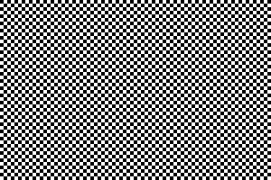
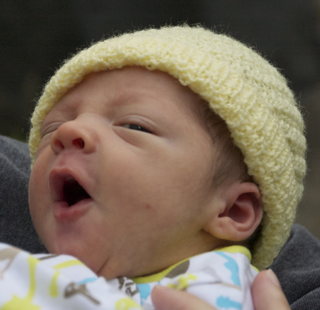
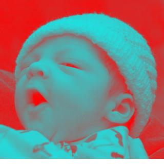
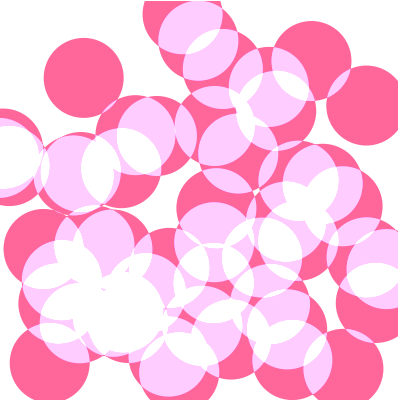

到目前为止，我们使用了图像以及路径。这是相当高级的。然而，canvas 同样能够处理像素。 你能够从整个画布或一部分中获取像素，接着处理像素，在将处理完毕的像素设置回canvas画布里。 这能够让你做出很多有趣的效果。
生成纹理
假设我们想生成西洋跳棋盘的纹理。纹理的尺寸是300 * 200 像素。
//create a new 300 x 300 pixel buffer
var data = c.createImageData(300,200);
// 遍历每一个像素
for(var x=0; x<data.width; x++) {
for(var y=0; y<data.height; y++) {
var val = 0;
var horz = (Math.floor(x/4) % 2 == 0); // 每四个像素循环一次
var vert = (Math.floor(y/4) % 2 == 0); // 每四个像素循环一次
if( (horz && !vert) || (!horz && vert)) {
val = 255;
} else {
val = 0;
}
var index = (y*data.width+x)*4; // 计算下标
data.data[index] = val; // 红色通道
data.data[index+1] = val; // 绿色通道
data.data[index+2] = val; // 蓝色通道
data.data[index+3] = 255; // 设置alpha透明度为1
}
}
// 将处理完的数据设置回画布上
c.putImageData(data,0,0);
相当简单。我们创建了一个新的缓存区，遍历每一个元素根据x，y坐标设置颜色，再将缓存数据设置到canvas画布上。 现在你注意到我们处理的是二维图像，但缓冲区只是一维数组。我们需要独自计算像素坐标的下标。
画布缓存区是非常简单的由每个像素的整数值组成的一维长数组。每个像素由红、绿、蓝以及alpha透明度部分组成，因此，
计算特定像素的红色通道值索引下标需要通过计算下面的等式：(y * width + x) * 4。对于宽度为20像素位图中的像素点（8，10）代入公式就是
(10*20 + 8) * 4。* 4乘4是因为每一个像素包括四个颜色通道（红绿蓝以及透明度）。
数据data对象中包括了图像的宽度，所以代码就是 (10*data.width + 8)*4。
一旦找到了红色通道，那么剩下的通道也能通过增加下标找到，正如上面的绿、蓝以及透明通道代码所示。
这是上面代码的运行结果。

添加噪音
现在我们做些许修改让棋盘看上去有些陈旧。 通过随机生成一些稍微不同颜色的像素，添加一些干扰像素。
if(val == 0) {
val = Math.random()*100;
} else {
val = 255-Math.random()*100;
}

上面，棋盘就做旧了一下。
图像反色
上面是通过像素缓冲区生成图像。 同样可以处理在canvas画布上的像素数据。 这就是说几乎所有的 PS 的滤镜及修改都能使用 canvas 完成。 例如，想将一条图片做反色处理。反色处理的程序很简单。 一个像素是由 RGBA 四个通道的值组成，每个值的范围是0到255。 转换每个像素值只需要使用255减去当前的通道值。如下代码：

var img = new Image();
img.onload = function() {
// 绘制图形到画布上
c.drawImage(img,0,0);
// 获取画布上的通道数据
var data = c.getImageData(0,0,canvas.width,canvas.height);
// 反转红绿蓝像素通道的值
for(n=0; n<data.width*data.height; n++) {
var index = n*4;
data.data[index] = 255-data.data[index];
data.data[index+1] = 255-data.data[index+1];
data.data[index+2] = 255-data.data[index+2];
// alpah 通道不需要处理
}
// 将处理完毕的数据设置回canvas画布上
c.putImageData(data,0,0);
}
img.src = "baby_original.png";
上面只修改了RGB通道值。Alpha通道不修改。处理后的图像如下：

灰度
Here's another example. It's essentially the same code, just a different equation. This one will turn a color image into black and white.
这里有另一个例子。代码也很类似，只是算法不同。这个例子将彩色图像处理成黑白效果。
for(n=0; n<data.width*data.height; n++) {
var index = n*4;
var r = data.data[index];
var g = data.data[index+1];
var b = data.data[index+2];
var v = r*0.21+g*0.71+b*0.07; // 平均权重
data.data[index] = v;
data.data[index+1] = v;
data.data[index+2] = v;
// alpha 通道不处理
}
我们没有简单地通过平均通道值选择灰度值。我发现我们的眼睛对某些颜色比其他颜色更加敏感。 所以上面代码的计算中加大了绿色通道的权重。以下是最终结果。

使用图像缓冲区，你能够任意绘制或操作图像，唯一的限制是速度。 虽然处理二进制数据不是Javascript的强项，然而浏览器运行得越来越快，因此一些类PS的图像处理在今天也是可能的。 在后面的工具章节中哦个，我会给你展示一些处理更加简单及快速的类库。
混合模式
Canvas 也支持混合模式。你会发现一些跟PhotoShop相类似的模式。
每次你绘制一个路径，每一个像素都会跟原来存在的像素做比较，并会根据算法计算最后的像素。
通过我们使用的模式是SrcOver，就是源像素（当前正在绘制的）会绘制在目标像素的上面over。
如果源像素是部分透明的，那么源像素与目标元素的透明部分就会混合在一起。
然而SrcOver只是众多模式中的一种。下面的例子是使用 lighter 模式绘制的重叠的圆。
lighter 会将两部分的像素相加，最大值为白色。
c.globalCompositeOperation = "lighter"; //set the blend mode
c.fillStyle = "#ff6699"; //fill with a pink
// 随机绘制50个圆
for(var i=0; i<50; i++) {
c.beginPath();
c.arc(
Math.random()*400, // 随机 x
Math.random()*400, // 随机 y
40, // 半径
0,Math.PI*2); // 整圆
c.closePath();
c.fill();
}
阴影效果
Canvas 支持阴影，与 CSS 类似。能够设置阴影颜色，偏移量和模糊半径来模拟不同的效果。 下面的例子是模拟绿色文本外发白光。
c.fillStyle = "black";
c.fillRect(0,0,canvas.width,canvas.height);
c.shadowColor = "white";
c.shadowOffsetX = 0;
c.shadowOffsetY = 0;
c.shadowBlur = 30;
c.font = 'bold 80pt Arial';
c.fillStyle = "#55cc55";
c.fillText("ALIEN",30,200);